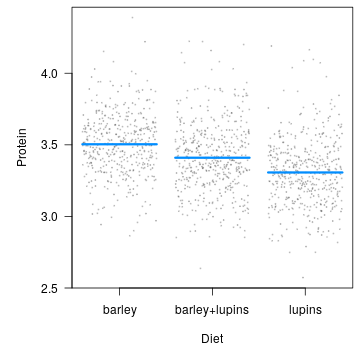
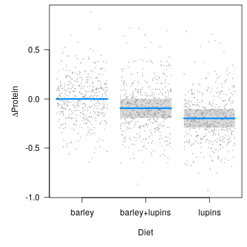
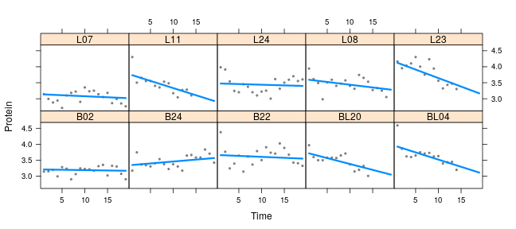

visreg can be used with mixed models, for example from the nlme or lme4 packages, although it is worth noting that these packages are unable to incorporate uncertainty about random effects into predictions, and therefore do not offer confidence intervals, meaning that visreg plots will lack confidence bands. Nevertheless, visreg is still useful for visualizing the effects of fixed effects in such models using contrast plots, as well as plotting effects without confidence intervals.
As an illustration, consider the following random-intercept, random-slope model from a study involving the protein content of cows’ milk in the weeks following calving:
library(lme4, quietly=TRUE)
data(Milk, package="nlme")
ctrl <- lmerControl(optCtrl=list(xtol_rel=1e-6)) # Warning otherwise
fit <- lmer(protein ~ Diet + Time + (Time|Cow), Milk, control=ctrl)
Plotting fixed effects
As mentioned above, a conditional plot will lack confidence bands (due to the large number of points, we’re making the partial residuals smaller and partially transparent):
visreg(fit, "Diet", ylab="Protein", points=list(col="#55555540", cex=0.25))

But, because the random effect terms drop out of a contrast plot, we do have bands here:
visreg(fit, "Diet", type="contrast", ylab=expression(Delta*'Protein'),
points=list(col="#55555540", cex=0.25))

Plotting random effects
The visreg package can also be used to plot random effects, although again, the plots will not include intervals. Below, we plot the modeled relationship between protein content and time for each cow. Two aspects of the code are worth pointing out:
- According to the object-oriented design of
visreg, thepredictmethod supplied bylme4is used. It has its own option,re.form, to control how random effects are used in the prediction, and this must be passed throughvisregaccordingly. - For the sake of space, I’m going to subset the plot to ten cows rather than all 79. This can be accomplished by returning, then subsetting, the raw
visregobject prior to plotting.
v <- visreg(fit, "Time", by="Cow", re.form=~(Time|Cow), plot=FALSE)
subCow <- sample(levels(Milk$Cow), 10)
vv <- subset(v, Cow %in% subCow)
plot(vv, ylab="Protein", layout=c(5,2))

Returning the data frames, estimates, confidence intervals, and residuals used in the construction of its plots like this allows users to write their own extensions and modifications of visreg plots.